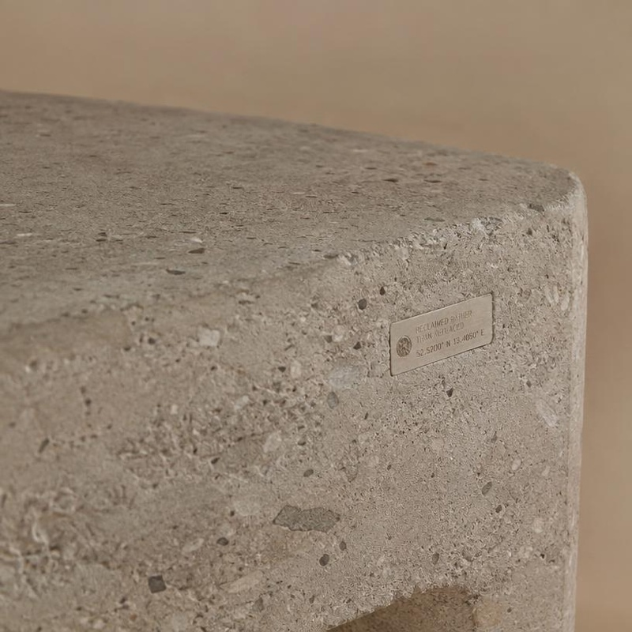
Origen visible
El mobiliario conserva elementos que permiten reconocer su origen reciclado y cuenta con un sello que explica la procedencia de sus materiales.
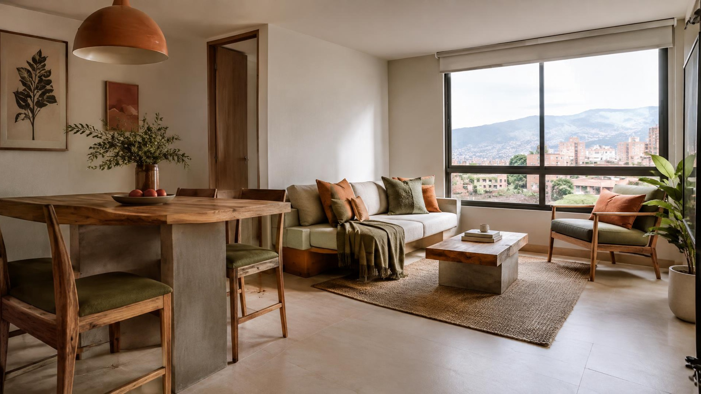
Transformamos residuos en nuevas formas de habitar
Una propuesta de mobiliario sostenible diseñada para responder a las necesidades de los diferentes espacios de los apartamentos VIS en Colombia.
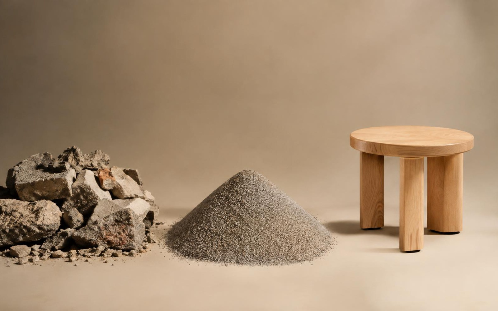
Esta propuesta busca dar una nueva función a materiales que normalmente serían descartados. Los RCD se transforman en elementos de mobiliario pensados para integrarse de manera funcional y estética al ambiente doméstico.
Toda la línea comparte una misma identidad material y visual, construida a partir de tres decisiones clave.

El mobiliario conserva elementos que permiten reconocer su origen reciclado y cuenta con un sello que explica la procedencia de sus materiales.
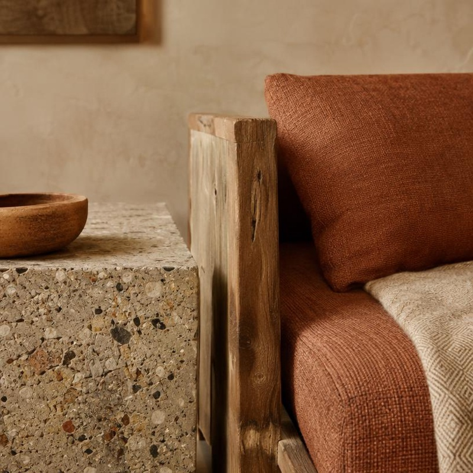
El RCD se combina con madera recuperada, textiles reciclados u otros materiales que mejoran la percepción de calidez, comodidad y estética.
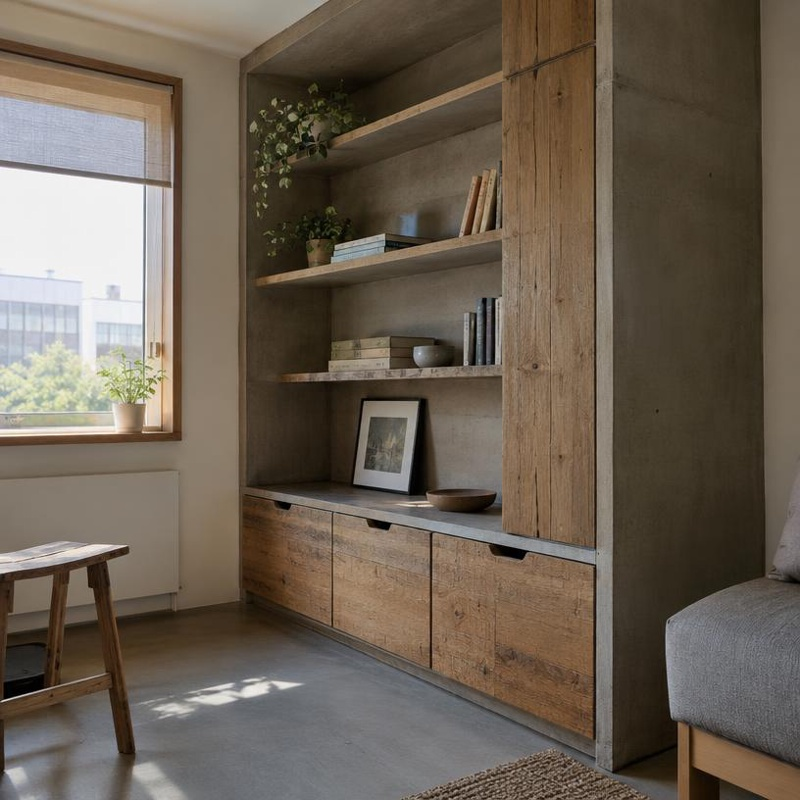
Cada pieza se desarrolla según las dimensiones, funciones y actividades del lugar en el que será utilizada.
El mobiliario no es modular. Cada espacio del apartamento recibe una pieza diseñada específicamente según su función, conservando colores, texturas y detalles que las identifican como parte de una misma línea.
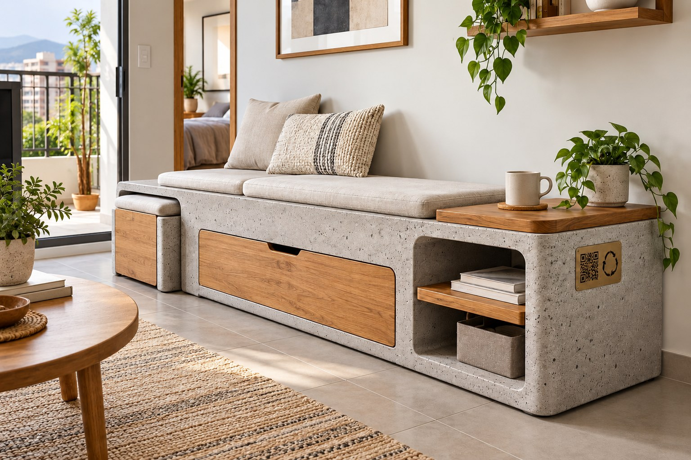
Una pieza diseñada para organizar objetos cotidianos y ofrecer diferentes superficies de apoyo. La combinación de materiales provenientes de RCD con madera recuperada conserva la identidad del material y aporta contraste, calidez y equilibrio visual.
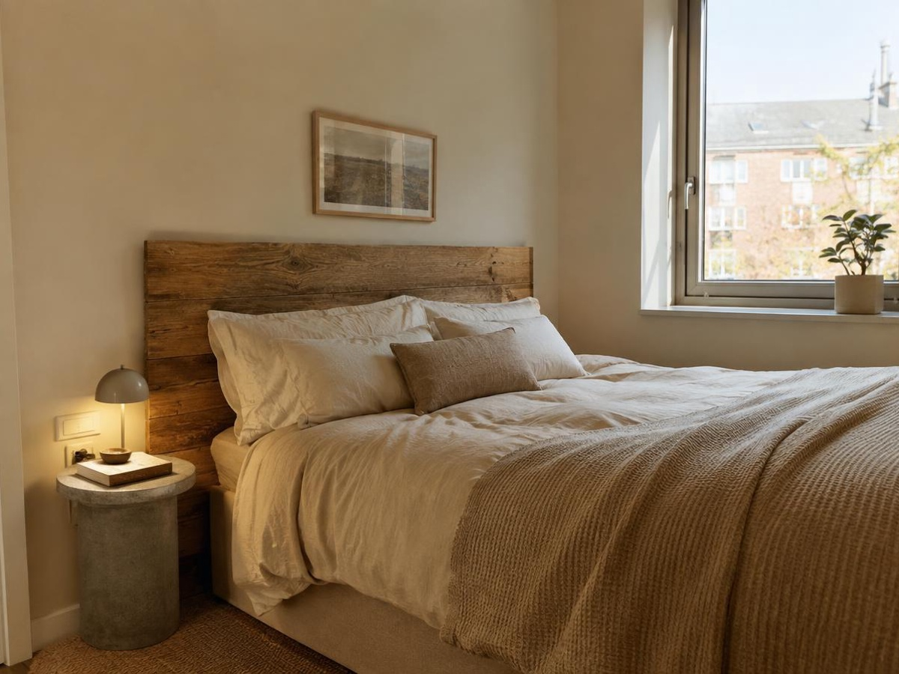
Un cabecero de madera recuperada y una mesa lateral de concreto reciclado que aprovechan al máximo un cuarto compacto.
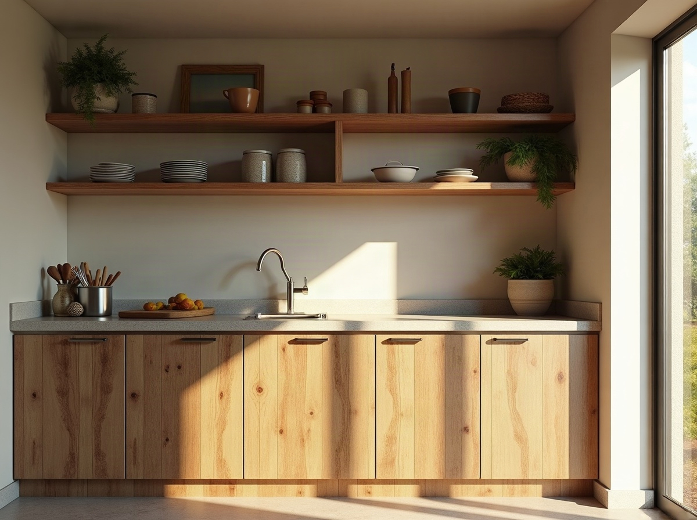
Repisas de madera recuperada y una superficie mineral que facilitan guardar y preparar sin ocupar espacio útil.
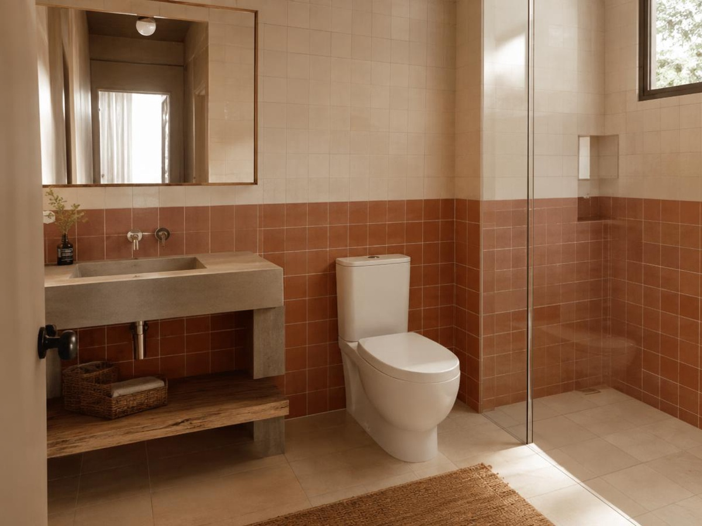
Un mueble de lavamanos en concreto reciclado con una repisa de madera que resuelve la organización diaria.
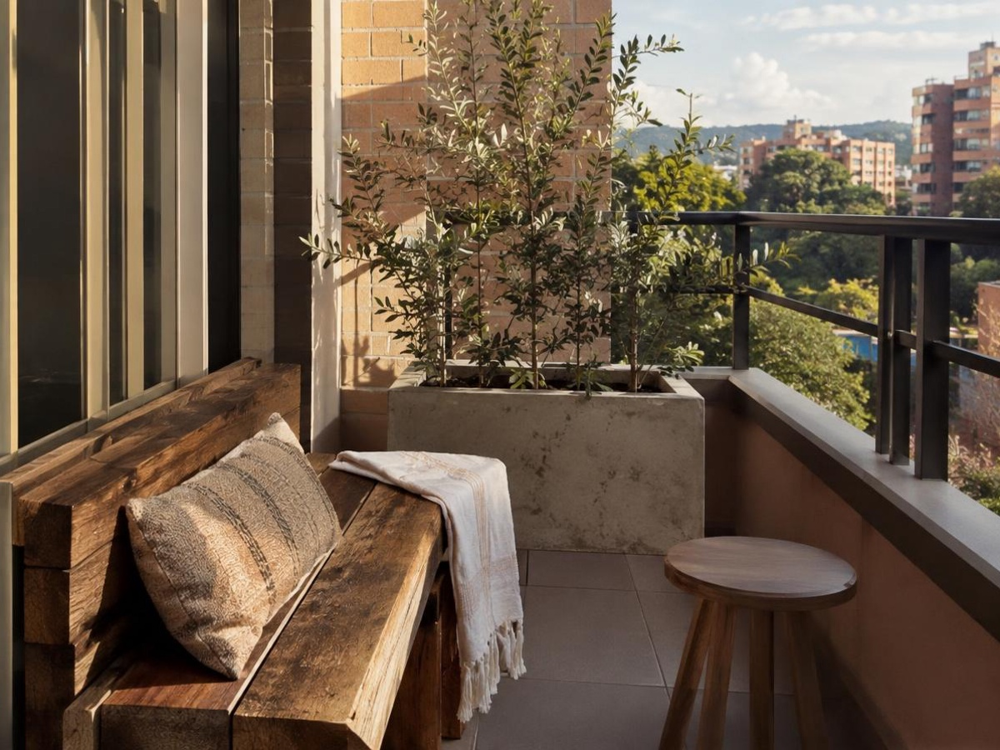
Una banca estrecha con jardinera integrada que convierte el balcón en un pequeño lugar de descanso y cultivo.
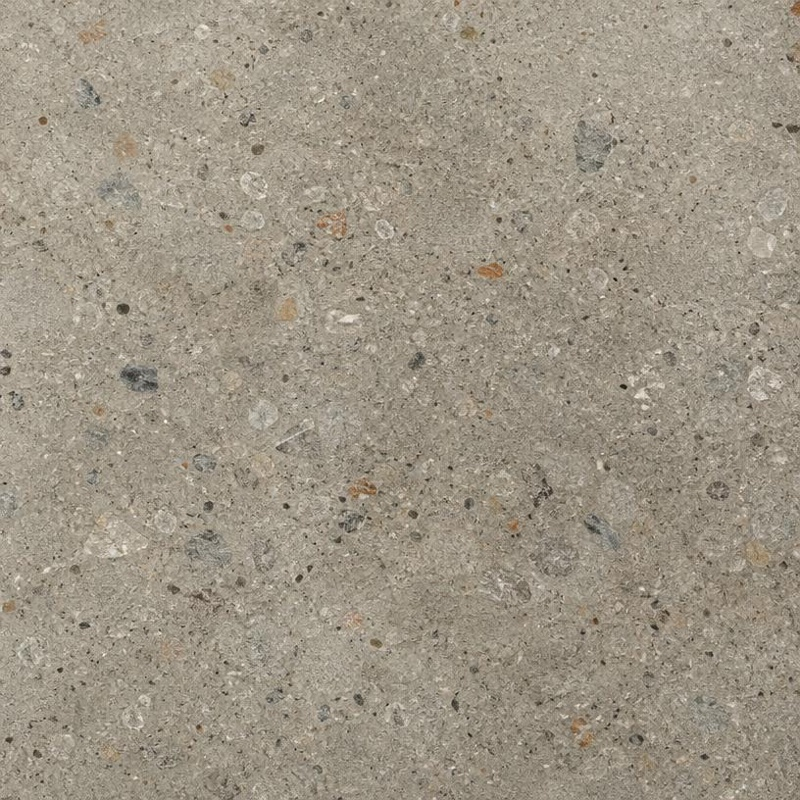
Material proveniente de residuos de construcción y demolición, seleccionado y transformado para una nueva aplicación.
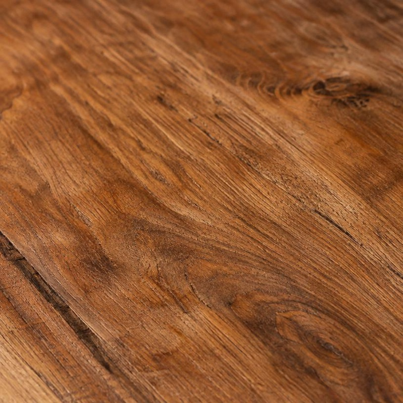
Material que aporta contraste, naturalidad y calidez visual.
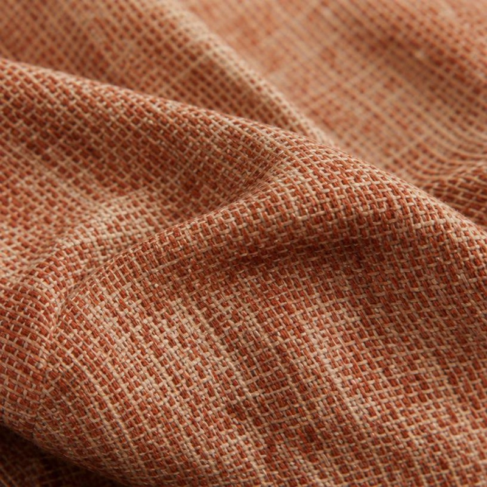
Elementos que aportan comodidad y una sensación más agradable en las superficies de contacto.
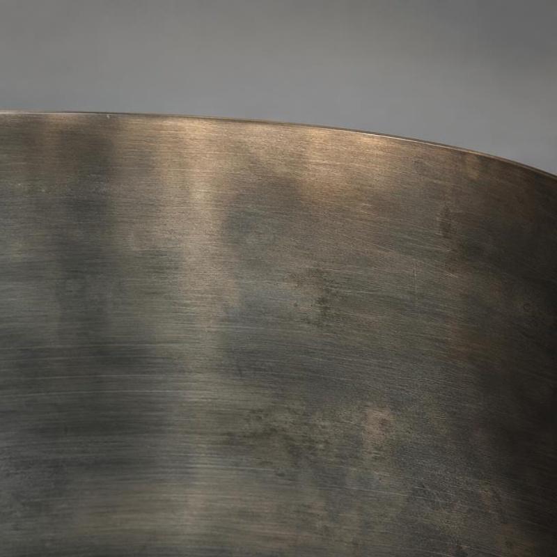
Material utilizado en estructuras, apoyos o detalles, según las necesidades de cada pieza.
Los materiales complementarios podrán variar de acuerdo con el espacio y la función del mobiliario.
Un recorrido en cinco pasos, desde el residuo recuperado hasta su integración en la vivienda.
Se identifican y recogen los residuos de construcción y demolición con potencial de reutilización.
Los materiales se limpian y se separan según su tipo, textura y posible aplicación.
El material recuperado se procesa y se prepara para convertirse en un nuevo componente.
Cada pieza se diseña y se fabrica de acuerdo con la función y las medidas de su espacio.
Se aplican los acabados finales y el mobiliario se integra a la vivienda VIS.
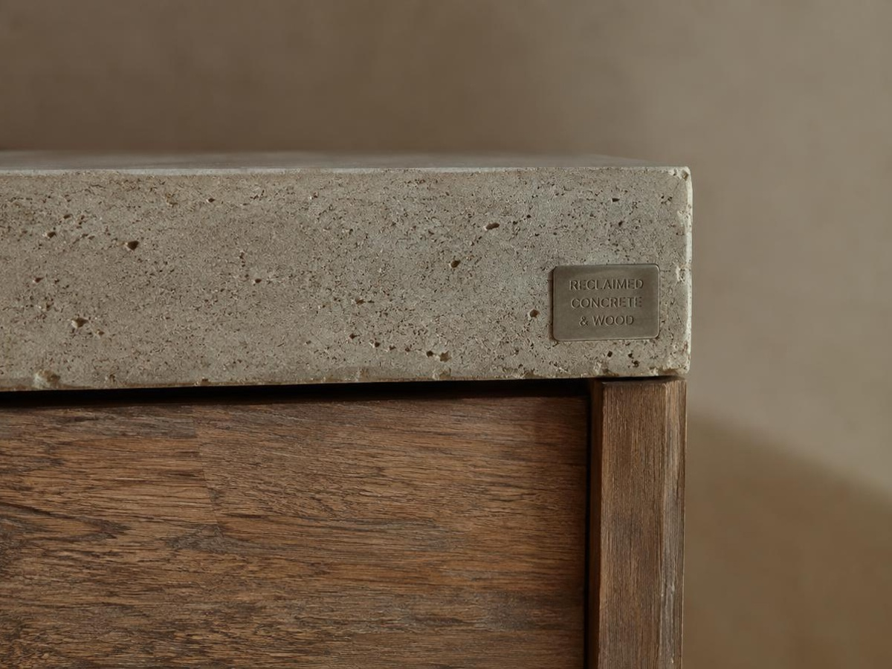
Escanea el código y conoce de dónde vienen los materiales, cómo fueron transformados y qué cuidados necesita tu mobiliario.
Espacio reservado para insertar el código QR definitivo. El código no se genera dentro de la imagen.
Limpia las superficies con un paño suave ligeramente húmedo. Evita productos abrasivos, golpes fuertes y exposición prolongada a la humedad. Sigue las recomendaciones indicadas para cada material.
Limpia las superficies con un paño suave ligeramente húmedo.
Evita productos abrasivos que puedan rayar o desgastar los acabados.
Los impactos fuertes pueden afectar los bordes y las uniones de la pieza.
No expongas el mobiliario a humedad prolongada para conservar sus materiales.
Sigue las recomendaciones indicadas para cada material de tu mobiliario.
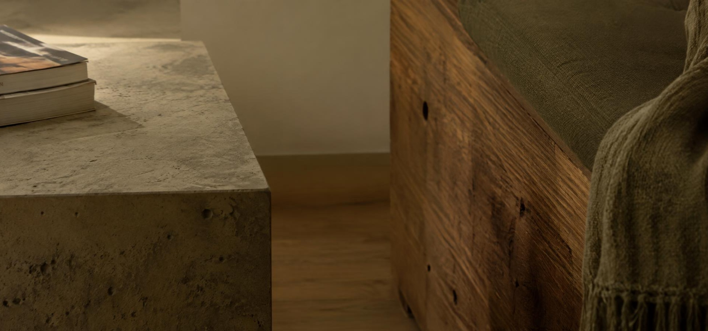
De residuo a recurso. De material a mobiliario. De espacio a hogar.
Proyecto académico de investigación-creación sobre el aprovechamiento de residuos de construcción y demolición en mobiliario para viviendas VIS en Colombia.